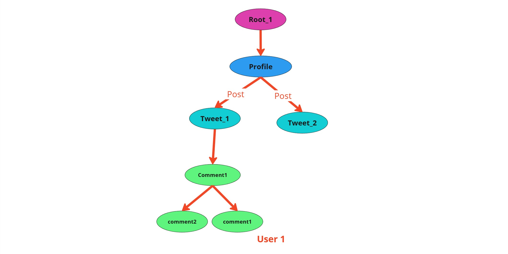
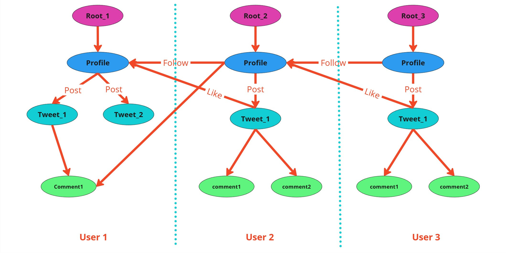
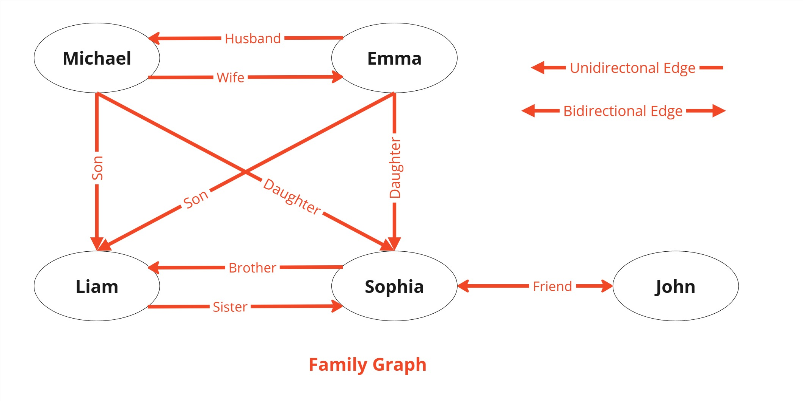

Building an Application with Jaseci#
This guide introduces how the Jaseci Stack accelerates application development by leveraging its graph-based programming model. With Jaseci, we can focus on implementing features rather than setting up complex systems. As you explore Jaseci’s features, you’ll uncover its wide range of use cases. This guide provides a quick introduction, helping you set up the Jaseci framework, define nodes, edges, and walkers, and craft application logic for your project.
What We Will Build#
We’ll develop a web application called LittleX, a streamlined and efficient version of Elon Musk’s X, using the Jaseci Stack. This project highlights the simplicity and power of Jaseci, enabling us to implement advanced features with minimal code and effort, tasks that typically require considerable time in traditional frameworks.
Key Features#
- User authentication: Sign up, log in, and profile management.
- Content management: Create, view, and interact with posts.
- Social interactions: Follow users and explore their content.
With Jaseci, we can focus on building these features seamlessly rather than dealing with the complexities of system setup. This guide focuses on the backend for LittleX, showcasing how Jaseci efficiently handles user authentication and database operations.
Why Jaseci?#
Jaseci empowers developers to build smarter applications with less hassle by:
- Simplifying User Management: It handles signup, login, and security out of the box.
- Connecting Data Easily: Perfect for building apps that need to model relationships, like social networks or recommendation systems.
- Scalability Built-In: Designed for cloud performance, so your app grows seamlessly with your users.
- AI at Your Fingertips: Adds intelligent features like personalization and moderation with minimal effort.
What You Need#
To get started with building LittleX, ensure you have the following:
- About 15 minutes: Time required to set up and explore the basics.
- A favorite text editor or IDE: Any development environment you are comfortable with.
- Python 3.12 or later: Ensure that Python 3.12 or higher is installed in your environment.
- Install required libraries: Jaclang, Jac-Cloud, MTLLM, and Jac-Splice-Orc.
- Node.js (optional): If you plan to integrate a frontend in future steps.
LittleX Architecture#


LittleX’s graph-based architecture uses nodes for entities like users and posts and edges for relationships like following or reacting. Nodes store attributes and behaviors, while edges capture properties like timestamps. Walkers traverse the graph, enabling dynamic actions and interactions. This design ensures efficient relationship handling, scalability, and extensibility for social media-like features.
Getting Started#
Set Up Jaseci#
Lesson 1: Let's create our first Node#
Jaclang, language used in Jaseci stack, organizes data as interconnected nodes within a spatial or graph-like structure. It focuses on the relationships between data points, rather than processing them step-by-step.
Node: A node is the fundamental unit of the Jaseci stack. Each node represents an object, entity, or a piece of data.
First create a node with name Person and attributes name, age.
- The
nodekeyword defines a node entity in the graph (Person). - The
haskeyword specifies the attributes of the node. name,ageare variable names (attributes of thePersonnode).str,intare the corresponding data types of these variables (strfor string,intfor integer).
Now, let's create the required nodes for LittleX.
Nodes are essential for representing entities in LittleX. Here are the nodes we need to create:
-
Profile Node
- Represents the user.
- Fields: username
-
Tweet Node
- Represents an individual tweet.
- Fields: content, embedding, created_at (timestamp)
-
Comment Node
- Represents comments for the tweets.
- Fields: content.
For more explanation visit
Lesson 2: Creating Edges#
Edge: Edge represents the connections or relationships between nodes. Edges can be unidirectional or bidirectional.

First, create an edge named Relation with the attribute 'since'.
- The
edgekeyword defines a relationship between nodes (Relation). - The
haskeyword specifies the attributes of the edge. intis used for integer values (years).stris used for string values (names).
Now, let's create the required edges for LittleX.
Edges define the relationships between nodes. Here are the edges we need to create:
-
Follows Edge
- Represents the relationship between users who follow each other.
-
Like Edge
- Represents the interactions between users and the tweets.
-
Post Edge
- Represents the relationship between the tweets and its authors.
For more explanation visit
Lesson 3: Creating our first Walker#
Walkers are graph-traversing agents in Jaclang that perform tasks without requiring initialization and can define abilities for various node types. The Jaseci stack automatically converts walkers into RESTful API endpoints.
First, create a walker named Relation with the attribute 'since'.
Now Lets create required walkers for LittleX.Walkers are graph-traversing agents that perform tasks. Here are the walkers we need to create:
-
User Initialization Walker
- Creates or visits a new profile node for a user.
- Ensures profiles exist in the system for any user action.
- If current walker enter via
root,visit_profileability will be executed. visit [-->(``?profile)] else {}Checks whether profile node exist from root, if yes, visit to that profile node. Otherwise execute to else part.here ++> profile()It creates a profile node and connects with current node(root).visit new_profileWalker visit to that node (profile).
-
Load User Profile Walker
- Loads all profiles from the database.
- Useful for managing or listing all users in the system.
walker load_user_profiles { obj __specs__ { static has auth: bool = False; } can load_profiles with `root entry { self.profiles: list = []; for user in NodeAnchor.Collection.find({"name": "profile"}) { user_node = user.architype; self.profiles.append( {"name": user_node.username, "id": jid(user_node)} ); } report self.profiles; } } static has auth: bool = FalseSet disable authentication for that walker.NodeAnchor.Collection.find({"name": "profile"})Get list of profiles.user.architypeGet architype of user node.jid(user_node)Get the unique id of an object.
-
Update Profile Walker
- Updates a user's profile, specifically the username.
- First
visit_profilewalker is called and it visits toProfilenode. here.username = self.new_usernameUpdate username.- How
update_profilewalker spawned onProfilenode, update the name will be discussed later.
-
Get Profile Walker
- Retrieves profile details and logs them.
- First
visit_profilewalker is called and it visits toProfilenode. - How
get_profilewalker spawned onProfilenode, get the profile detailes will be discussed later.
-
Follow Request Walker
- Creates a follow edge.
- Walker
follow_request, when spawned on the followee profile, will create a Follow edge from the follower to the followee. - How it is executed will be discussed later.
-
Unfollow Request Walker
- Removes the follow edge.
- Walker
un_follow_requestspawned on followee profile will remove theFollowedge from follower to followee. - How it is executed will be discussed later.
-
Create Tweet Walker
- Creates a new tweet for a profile and adds it to the graph using a
Postedge. embedding = sentence_transformer.encode(self.content).tolist()Embedding the content.tweet_node = here +:post:+> tweet(content=self.content, embedding=embedding)Create a new tweet with content, its embedding.report tweet_nodereports the newly created tweet node.
- Creates a new tweet for a profile and adds it to the graph using a
-
Update Tweet Walker
- Updates the content of an existing tweet by its ID.
- Walker
update_tweetspawned on tweet node, that will update the content of the tweet. - How it is executed will be discussed later.
-
Remove Tweet Walker
- Deletes a tweet by removing its connection to the profile.
- Walker
remove_tweet, when spawned on a tweet node, will remove the tweet. - How it is executed will be discussed later.
-
Like Tweet Walker
- Adds a like edge between a tweet and the profile liking it.
- Walker
like_tweetspawned on tweet node, that will like the tweet. - How it is executed will be discussed later.
-
Remove Like Walker
- Removes the like edge
- Walker
remove_likespawned on tweet node, that will remove the like. - How it is executed will be discussed later.
-
Comment Tweet Walker
- Adds a comment to a tweet by creating a comment node and connecting it to the tweet.
- Walker
comment_tweetspawned on tweet node, that will add a comment to tweet and create a edge with author of the comment. - How it is executed will be discussed later.
-
Load Tweet Walker
- Loads detailed information about a tweet, including its content, embedding and author.
- First
visit_profilewalker is called and it visits toProfilenode. visit [-->(?Tweet)]` visits to each tweet and retrieve the info of tweets posted by the user.- How those tweets are retrieved will be discussed later.
-
Load Feed Walker
- Fetches all tweets for a profile, including their comments and likes.
walker load_feed :visit_profile: { has search_query: str = ""; can load with Profile entry { feeds: list = []; user_tweets = here spawn load_tweets(); feeds.extend(user_tweets.tweet_info); for user_node in [-:Follow:->](`?Profile) { user_tweets = user_node spawn load_tweets(); feeds.extend(user_tweets.tweet_info); } tweets = [feed.content for feed in feeds]; tweet_embeddings = [numpy.array(feed.embedding) for feed in feeds]; summary: str = summarize_tweets(tweets); # Filter tweets based on search query if (self.search_query) { filtered_results = search_tweets( self.search_query, feeds, tweet_embeddings ); report {"feeds": filtered_results, "summary": summary}; } else { report {"feeds": self.feeds, "summary": summary}; } } } - First
visit_profilewalker is called and it visits toProfilenode. - With
Profileentry following things are executed. user_tweets = here spawn load_tweets();Spawn load_tweets walker with current node.feeds.extend(user_tweets.tweets);Add the user's tweets to the profile's feed.user_node = &user;Get the user node.self.summary: str = summarise_tweets(tweets);Summarize the tweets.if (self.search_query) { ... } else { ... }If a search query is provided, filter the tweets based on the query. Otherwise, return all tweets.
- Fetches all tweets for a profile, including their comments and likes.
1 2 3 4 5 6 7 8 9 10 11 12 13 14 15 16 17 18 19 20 21 22 23 24 25 26 27 28 29 30 31 32 33 34 35 36 37 38 39 40 41 42 43 44 45 46 47 48 49 50 51 52 53 54 55 56 57 58 59 60 61 62 63 64 65 66 67 68 69 70 71 72 73 74 75 76 77 78 79 80 81 82 83 84 85 86 87 88 89 90 91 92 93 94 95 96 97 98 99 100 101 102 103 104 105 106 107 108 109 110 111 112 113 114 115 116 117 118 119 120 121 122 123 124 125 126 127 128 129 130 131 132 133 134 135 136 137 138 139 140 141 142 143 144 145 146 147 148 149 150 151 152 153 154 155 | |
Test functionality
Using tools like Swagger or Postman, you can test these APIs to confirm their functionality.
-
Start the Server
jac serve filename.jacrun using command line. -
Access Swagger Docs Open your browser and navigate to http://localhost:8000/docs
-
Test an API Endpoint
- Click on an endpoint
- Click "Try it out" to enable input fields.
- Enter required parameters (if any).
- Click "Execute" to send the request.
- View the response (status code, headers, and JSON response body).
Lesson 4: Let's add some AI magic to our application using the power of MTLLM:#
In this lesson, we'll explore how to leverage AI to enhance your application. MTLLM supports easy integration of multiple LLM models, and for this tutorial, we are using Llama. If you need more details on integrating different models, please check the MTLLM documentation. (You can also explore OpenAI’s LittleX for additional insights.) Using Llama, you can summarize tweets to quickly understand trends, major events, and notable interactions in just one line.
Why This Feature Matters
Think of your application as a personalized newsfeed or trend analyzer.
- Save Time: Instead of scrolling through dozens of tweets, users get a quick summary of what's happening.
- Gain Insights: By distilling key information, the application helps users make sense of large volumes of data.
- Engage Users: AI-powered summaries make the experience dynamic and intelligent, setting your platform apart from others.
- Import Lamma with MTLLM
- Summarize Tweets Using Lamma:
- Summarize the latest trends, events, and interactions in tweets
- Test with Swagger
- Run the above mtllm example with
jac serve mtllm_example.jac. - Register with email and password.
- Login with registered email and password.
- Copy the authentication key and paste it in authentication box.
- Run the get_summary api endpoint.
Lesson 5: Exploring Graph Security#
Up until this point, you’ve successfully created a single-user social media application where a user can post tweets, like them, and interact with comments.
Now, imagine scaling this application to handle multiple users. Questions arise, such as:
- How do you ensure users cannot modify or view others' data without permission?
- How do you securely enable collaboration, such as liking or commenting on someone else's tweet?
This is where graph security in Jaclang simplifies managing access and permissions between users' graphs.
Jaclang offers explicit access control, ensuring data privacy and secure interactions between user graphs. Permissions define what other users can do with specific parts of a graph.
Access Levels
NO_ACCESS: No access to the current archetype.READ: Read-only access to the current archetype.CONNECT: Allows other users' nodes to connect to the current node.WRITE: Full access, including modification of the current archetype.
Granting and Managing Access
By default, users cannot access other users' nodes. To grant access, permission mapping must be added explicitly.
- Grant Access Using Walkers
- Remove Access
- Grant Read Access to All
- Restrict Access
Scenarios
-
Posting a Tweet (Granting Read Access)
- When a user creates a tweet, it is private by default.
- To make it viewable by others, the system explicitly grants READ access to the tweet.
- Create Tweet Walker
Jac.unrestrict(here, level="READ")Unrestrict that tweet node to everyone with read access.
-
Commenting on a Tweet
- Similar to liking, commenting requires CONNECT access.
- A new comment node is created and linked to the tweet while granting READ access for others to view it.
- Comment Tweet Ability
Jac.unrestrict(tweet_node, level="CONNECT")Unrestrict the tweet node to connect level.
1 2 3 4 5 6 7 8 9 10 11 12 13 14 15 16 17 18 19 20 21 22 23 24 25 26 27 28 29 30 31 32 33 34 35 36 37 38 39 40 41 42 43 44 45 46 47 48 49 50 51 52 53 54 55 56 57 58 59 60 61 62 63 64 65 66 67 68 69 70 71 72 73 74 75 76 77 78 79 80 81 82 83 84 85 86 87 88 89 90 91 92 93 94 95 96 97 98 99 100 101 102 103 104 105 106 107 108 109 110 111 112 113 114 115 116 117 118 119 120 121 122 123 124 125 126 127 128 129 130 131 132 133 134 135 136 137 138 139 140 141 142 143 144 145 146 147 148 149 150 151 152 153 154 155 | |
Lesson 6: Adding node abilities#
Nodes in Jaclang can have abilities defined to perform specific tasks. These abilities are structured as entry and exit points.
Imagine a smart home system where each room is represented as a node. Walkers traverse these nodes, performing tasks like turning lights on or off, adjusting temperature, or sending alerts when entering or exiting a room.
Entry When someone enters a room:
- Lights Turn On: The system detects entry and automatically switches on the lights to ensure the person feels welcomed.
- Room Occupied: The system marks the room as occupied in its database or tracking system.
You enter the Living Room, and the system turns on the lights and logs your presence.
Exit When someone exits a room:
- Lights Turn Off: The system detects the exit and switches off the lights to save energy.
- Room Vacant: It marks the room as unoccupied in its tracking system.
You leave the Living Room, and the system turns off the lights and updates its records to show the room is vacant.
Scenarios in node
-
Update profile
- A user updates their profile.
- Update Tweet Walker Ability
-
Update Profile Node Ability
- It replaces the abilities in walker.
-
As
update_profilewalker is spawned onProfile, it visits toProfile. - With the entry of the
update_profilewalker, Profile will be updated.
-
Get profile
- Get profile details.
- Update Tweet Walker Ability
-
Create get ability
- It replaces the abilities in walker.
-
As
get_profilewalker is spawned onProfile, It visits toProfile. - With the entry of the
get_profilewalker, Profile will be reported.
-
Follow profile
- Following a user.
- Update Tweet Walker Ability
-
Follow Request Node Ability
- It replaces the abilities in walker.
-
As
follow_requestwalker is spawned onProfile, it visits toProfile. - With the entry of the
follow_requestwalker,Followedge is created and connected. [root-->(?Profile)]` gets the current user profile.current_profile[0] +:Follow():+> selfconnects the followee with Follow edge.
-
Unfollow profile
- Unfollowing a user.
- Unfollow Profile Walker Ability
-
Unfollow Profile Node Ability
- It replaces the abilities in walker.
-
As
un_follow_requestwalker is spawned onProfile, it visits toProfile. - With the entry of the
un_follow_requestwalker,Followedge is disconnected. [root-->(?Profile)]` gets the current user profile.current_profile[0] del-:Follow:-> selfdisconnects the followee with Follow edge.
-
Update Tweet
- User updated their tweet.
-
Update Tweet Walker Ability
```jac walker update_tweet :visit_profile: { has tweet_id: str; has updated_content: str; can visit_tweet with profile entry { tweet_node = &self.tweet_id; visit tweet_node; } can update_tweet with tweet entry { here.content = self.updated_content; report here; } } ``` -
Update Tweet Node Ability
- It replaces the abilities in walker.
-
As
update_tweetwalker is spawned onTweet, it visits toTweet. - With the exit of the
update_tweetwalker, the tweet is updated. self.content = here.updated_contentupdated the current tweet.
-
Delete Tweet
- Deletes the tweet.
- Delete Tweet Walker Ability
-
Delete Tweet Node Ability
- It replaces the abilities in walker.
-
As
remove_tweetwalker is spawned onTweet, It visits toTweet. - With the exit of the
remove_tweetwalker, tweet is deleted. del selfdeletes the current tweet.
-
Like Tweet
- User likes the tweet.
- Like Tweet Walker Ability
-
Like Tweet Node Ability
- It replaces the abilities in walker.
-
As
like_tweetwalker is spawned onTweet, it visits toTweet. - With the entry of the
like_tweetwalker, tweet is liked. [root-->(?Profile)]` gets the current user profile.self +:Like():+> current_profile[0]connects the user withLikeedge.
-
Remove Like Ability
- User removes the like.
- Remove Like Walker Ability
-
Remove Like Node Ability
- It replaces the abilities in walker.
-
As
remove_likewalker is spawned onTweet, it visits toTweet. - With the entry of the
remove_likewalker, like is removed. [root-->(?Profile)]` gets the current user profile.self del-:Like:-> current_profile[0]disconnects the user withLikeedge.
-
Comment Ability
- When a user creates a tweet, it is private by default.
- Comment Walker Ability
walker comment_tweet :visit_profile: { has tweet_id: str; has content: str; can add_comment with profile entry { comment_node = here ++> comment(content=self.content); tweet_node = &self.tweet_id; Jac.unrestrict(tweet_node, level="CONNECT"); tweet_node ++> comment_node[0]; report comment_node[0]; } } -
Comment Ability
- It replaces the abilities in walker.
-
As
comment_tweetwalker is spawned onTweet, it visits toTweet. - With the entry of the
comment_tweetwalker, comment is added to the tweet. [root-->(?Profile)]` gets the current user profile.comment_node = current_profile[0] ++> Comment(content=here.content)connects the user withCommentnode.
-
Load Tweets
- Load tweet information.
- Load Tweet Walker Ability
walker load_tweets :visit_profile: { has if_report: bool = False; has tweets: list = []; can go_to_tweet with profile entry { visit [-->](`?tweet); } can load_tweets with tweet entry { Jac.unrestrict(here, level="READ"); comments = here spawn load_comments(); likes = here spawn load_likes(); tweet_content = here spawn load_tweet(); tweet_info = { "comments": comments.comments, "likes": likes.likes, "tweet": tweet_content.tweet_info }; self.tweets.append(tweet_info); if self.if_report { report self.tweets; } } } -
Load Tweets Node Ability
- It replaces the abilities in walker.
can get_info()-> TweetInfo { return TweetInfo( id=jid(self), content=self.content, embedding=self.embedding, likes=[i.username for i in [self-:Like:->]], comments=[{"id": jid(i), "content": i.content} for i in [self-->(`?Comment)]] ); }- This defines a abilitiy named
get_infowithin theTweetnode and it returns an instance of theTweetInfonode. id=jid(self)retrieves the unique jac identifier (jid) of the currentTweetnode.- This assigns the
contentproperty of the currentTweetobject to thecontentfield of theTweetInfoobject that has variables id, content, embedding, likes, comments.
- This defines a abilitiy named
- It replaces the abilities in walker.
1 2 3 4 5 6 7 8 9 10 11 12 13 14 15 16 17 18 19 20 21 22 23 24 25 26 27 28 29 30 31 32 33 34 35 36 37 38 39 40 41 42 43 44 45 46 47 48 49 50 51 52 53 54 55 56 57 58 59 60 61 62 63 64 65 66 67 68 69 70 71 72 73 74 75 76 77 78 79 80 81 82 83 84 85 86 87 88 89 90 91 92 93 94 95 96 97 98 99 100 101 102 103 104 105 106 107 108 109 110 111 112 113 114 115 116 117 118 119 120 121 122 123 124 125 126 127 128 129 130 131 132 133 134 135 136 137 138 139 140 141 142 143 144 145 146 147 148 149 150 151 152 153 154 155 156 157 158 159 160 161 162 163 164 165 166 167 168 169 170 171 172 173 174 175 176 177 178 179 180 181 182 183 184 185 186 187 188 189 190 191 192 193 194 195 196 197 198 199 200 201 202 203 204 205 206 207 208 209 210 211 212 213 214 215 | |
Lesson 7: Integrating Jac Splice Orchestrator#
JAC Cloud Orchestrator (jac-splice-orc) transforms Python modules into scalable, cloud-based microservices. By deploying them as Kubernetes Pods and exposing them via gRPC, it empowers developers to seamlessly integrate dynamic, distributed services into their applications.
Why is it important?
- Scalability at its Core: It handles dynamic workloads by effortlessly scaling microservices.
- Seamless Integration: Makes advanced cloud-based service deployment intuitive and efficient, reducing the operational overhead.
- Flexible and Dynamic: Allows you to import Python modules dynamically, adapting to evolving application requirements.
- Optimized for Developers: Simplifies complex backend orchestration, enabling more focus on feature development and innovation.
- Setup Configuration file and Create Cluster
- Initialize Jac Splice Orchestrator